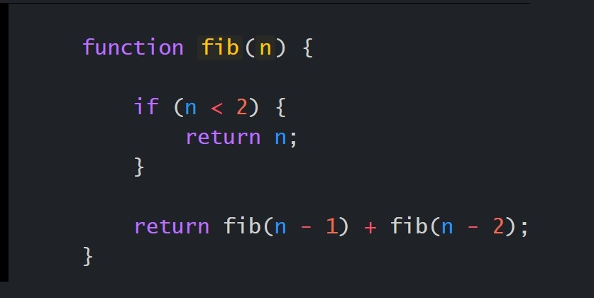

El Sumatorio, también conocido como notación sigma, es un operador matemático
que permite representar sumas de muchos sumandos, n o incluso infinitos sumandos. Se expresa con la
letra griega sigma Σ, y se define como: Esto se lee: «sumatorio sobre i, desde m hasta n, de x
sub-i».
PRODUCTORIO
El Productorio, también conocido como multiplicatorio o producto Pi,
es una notación matemática que representa una multiplicación de una cantidad arbitraria (finita
o infinita) y se expresa con la letra griega pi mayúscula Π.
Tal como se ve, solo se trata de ciclos/bucles for loops una vez traducidos a
cualquier lenguaje de programación.
SUCESIÓN DE FIBONACCI
En matemáticas, la sucesión o serie de Fibonacci es la siguiente sucesión infinita de números naturales:
La sucesión comienza con los números 0 y 1; a partir de estos, “cada término es la suma de los dos
anteriores”, es la relación de recurrencia que la define.

A los elementos de esta sucesión se les llama hijos de Fibonacci. Esta sucesión fue descrita en Europa
por Leonardo de Pisa, matemático italiano del siglo XIII también conocido como Fibonacci. Tiene
numerosas aplicaciones en ciencias de la computación, matemática y teoría de juegos. También aparece en
configuraciones biológicas, como por ejemplo en las ramas de los árboles, en la disposición de los
pétalos u hojas en las flores y tallos respectivamente, en las flores de alcachofas y girasoles, en las
inflorescencias del brécol romanesco, en la configuración de las piñas de las coníferas, en la
reproducción de los conejos y en cómo el ADN codifica el crecimiento de formas orgánicas complejas. De
igual manera, se encuentra en la estructura espiral del caparazón de algunos moluscos, la espiral de una
galaxia en el universo, por nombrar solo algunos entre cientos de ejemplos..
Ingrese una posición y le dirá a cuál número de la sucesión de Fibonacci corresponde.